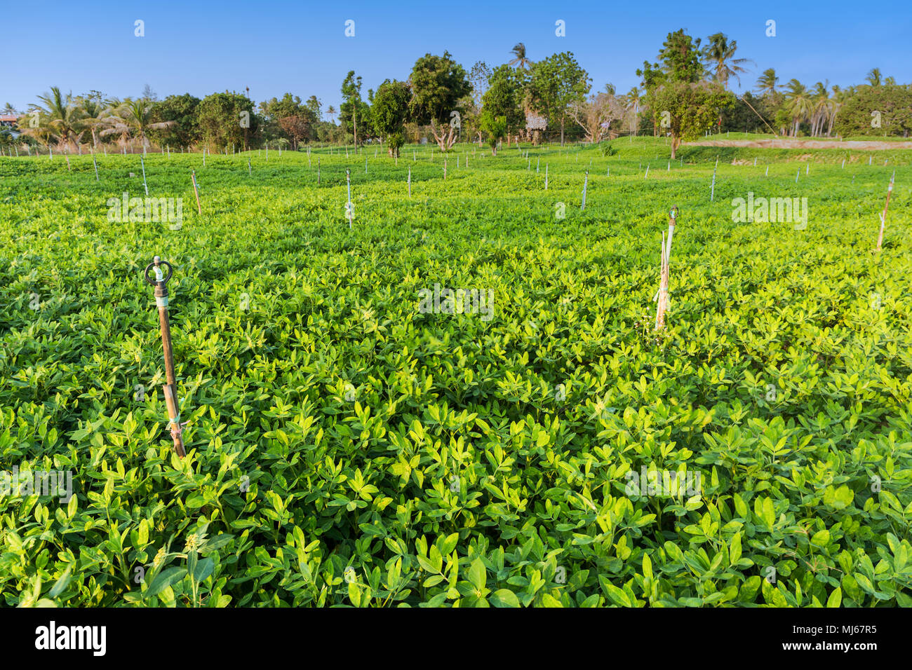

Groundnut: The Nutty Crop

Uses of Groundnut
Groundnut is widely used for various purposes:
- Edible Oil: Groundnut oil is commonly used for cooking due to its mild flavor and high smoking point.
- Food Products: Groundnuts are consumed as snacks (roasted or boiled), and used in products like peanut butter.
- Animal Feed: The remaining cake after oil extraction is used as animal feed due to its high protein content.
Types of Groundnut
Different varieties of groundnuts are grown based on climate and usage:
- Spanish: Known for its high oil content and often used in peanut butter.
- Virginia: Has larger kernels, popular as roasted peanuts.
- Runner: Used extensively in peanut butter due to its uniform kernel size.
Growth Requirements for Groundnut
Groundnuts require specific conditions to grow effectively:
- Climate: Grows well in warm, tropical climates with moderate rainfall.
- Soil: Prefers sandy loam soil with good drainage to prevent waterlogging.
- Water: Requires moderate irrigation, especially during flowering and pod formation stages.
Natural Fertilizers for Groundnut
Natural fertilizers can help groundnut crops thrive:
- Compost: Enriches the soil with nutrients, enhancing soil structure.
- Manure: Adds organic matter and improves soil fertility.
- Green Manure: Helps add nitrogen to the soil, which is beneficial for groundnut plants.
Pest and Disease Prevention
Practices to protect groundnut crops from pests and diseases:
- Crop Rotation: Reduces soil-borne diseases and pests.
- Use of Resistant Varieties: Planting pest-resistant varieties minimizes damage.
- Proper Irrigation: Prevents fungal diseases associated with excess moisture.
Health Benefits of Groundnut
- Rich in Protein: Groundnuts are a good source of plant-based protein.
- High in Healthy Fats: Contains monounsaturated and polyunsaturated fats beneficial for heart health.
- Contains Nutrients: Rich in vitamins, minerals, and antioxidants that promote overall health.
Frequently Asked Questions
1. How long does it take to grow groundnuts?
Groundnuts usually take about 120 to 150 days to mature, depending on the variety and climate.
2. What pests commonly affect groundnut crops?
Common pests include aphids, leafhoppers, and caterpillars, which can be managed through integrated pest management practices.
Back to Crop List